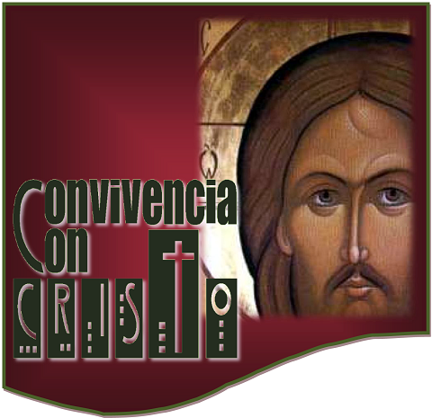
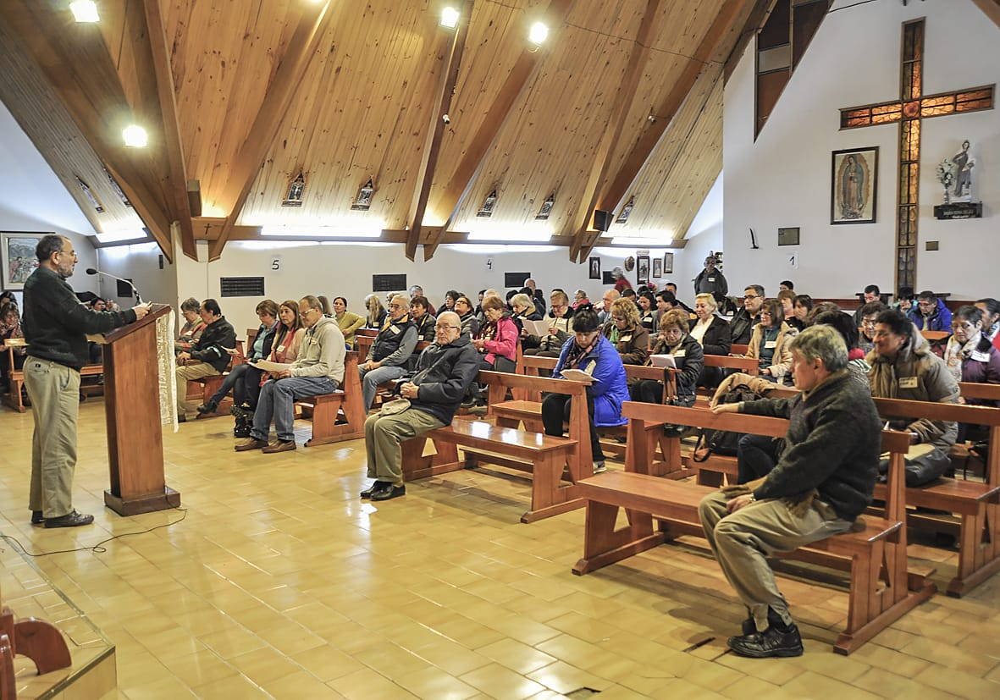
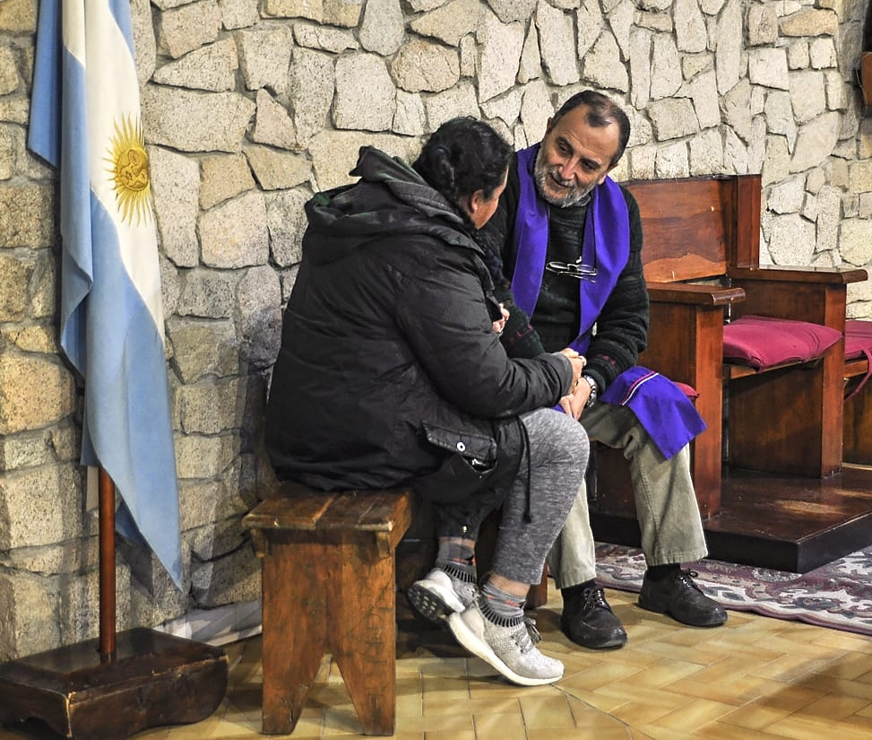
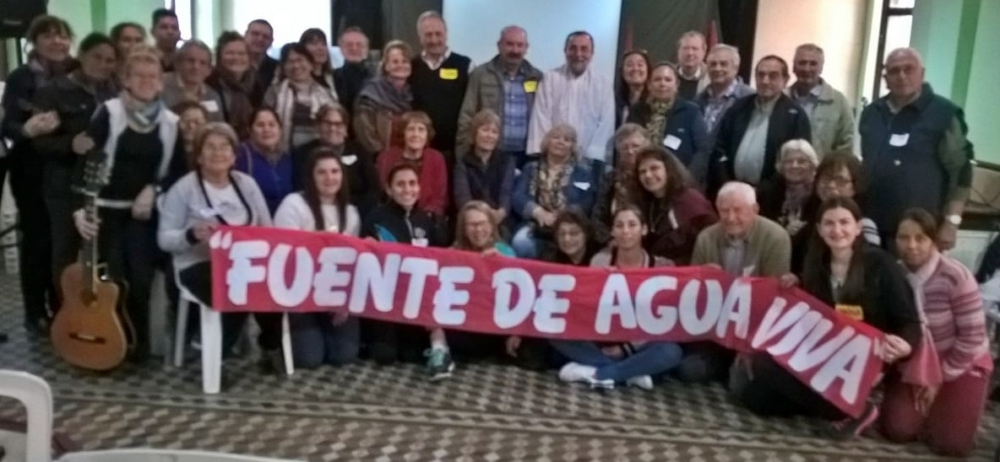
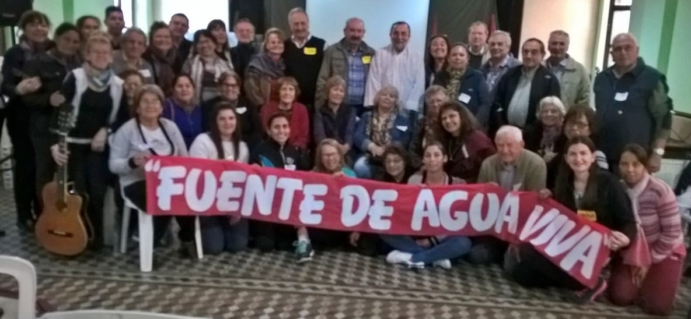
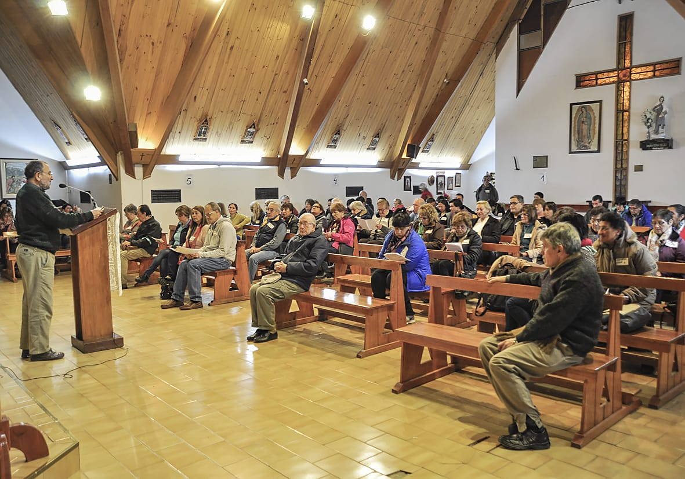
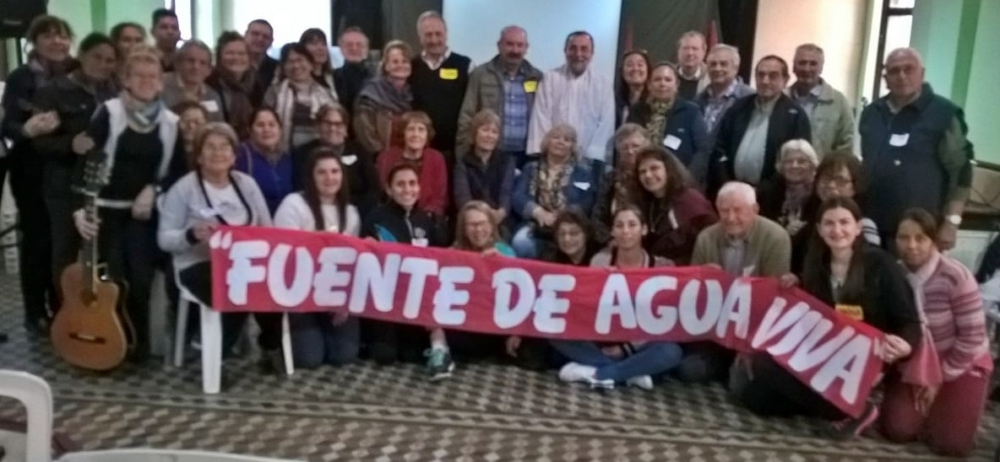

Para apoyar la difusión del mensaje cristiano
Qué es y a qué se dedica
Somos una asociación sin fines de lucro constituida para responder a un llamado: fomentar iniciativas que favorezcan la difusión del mensaje cristiano entre los pobres, destinatarios de la opción preferencial que como Iglesia intentamos vivir, según lo expresan el Concilio Vaticano II y los obispos Latinoamericanos en Medellín, Puebla, Santo Domingo y Aparecida.NUESTRO OBJETIVO: es que los que menos tienen puedan acercarse a Dios, recibiendo el mensaje de Jesús profundamente. Para ello apoyamos especialmente las Convivencias con Dios (Ver mas abajo que son). De la misma manera fomentamos la formación de los evangelizadores, en especial los que animan dichos retiros. Para esos fines recaudamos fondos por medios acordes con la doctrina social de la iglesia católica.


Volver arriba
Por qué llevamos este nombre
Por san Lucas, el que más muestra -en la Biblia- la opción preferencial por los pobres de Jesús y sus discípulos.Por san Bernabé, modelo de formadores, según nos narra Hechos de los Apóstoles.
Volver arriba
Qué relación tiene la FLB con la comunidad Convivencia con Dios
La fundación brinda apoyo - especialmente económico - a dicha comunidad, pero no existen vínculos jurídicos ni organizativos,salvo los acuerdos que establecen para la aplicación de los programas.
Volver arriba
Qué son las Convivencias con Dios. (CcD)

Las Convivencias son siete retiros espirituales
de seis días cada uno(la primera es la CcCristo) encierran un proceso de maduración y formación cristiana integral.
Practicados con el orden conveniente, van llevando hacia la unión
con Dios, por el camino de la espiritualidad carismáticas.
Mediante su método propio -LAS CONTEMPLACIONES ACTUADAS- hacen vivir en presente la historia de la salvación.
Brindan mayor docilidad al Espíritu, que se experimenta presente, vivo y actuante en cada uno y en la comunidad.
Nos hacen descubrir nuestra misión en la sociedad, mediante una experiencia comunitaria donde quedan superadas las diferencias de edad, sexo, cultura, pueblo, condición religiosa o económica.
La asociación católica dedicada a dar estos retiros es la comunidad "Convivencia con Dios".
Además ofrece retiros de fin de semana y jornadas para níños, jóvenes, matrimonios, músicos o público general.
Algunos son sobre temas específicos: sobre el primer anuncio (kerygma), la Eucaristía, la Misericordia, el acompañamiento espiritual, la acción social, etc.
Volver arriba
PERSONERIA JURIDICA: Nº 1910
FECHA COMIENZO EN ACTIVIDADES: 4 de septiembre de 2008




 

Volver arriba
Mediante su método propio -LAS CONTEMPLACIONES ACTUADAS- hacen vivir en presente la historia de la salvación.
Brindan mayor docilidad al Espíritu, que se experimenta presente, vivo y actuante en cada uno y en la comunidad.
Nos hacen descubrir nuestra misión en la sociedad, mediante una experiencia comunitaria donde quedan superadas las diferencias de edad, sexo, cultura, pueblo, condición religiosa o económica.
La asociación católica dedicada a dar estos retiros es la comunidad "Convivencia con Dios".
Además ofrece retiros de fin de semana y jornadas para níños, jóvenes, matrimonios, músicos o público general.
Algunos son sobre temas específicos: sobre el primer anuncio (kerygma), la Eucaristía, la Misericordia, el acompañamiento espiritual, la acción social, etc.
Para mas información: https://convivenciacondios.org/
Volver arriba
Lugar de la Sede
Salom 446, Dto 1 Barrios Barracas,de la Ciudad Autónoma de Buenos Aires, República Argentina. Código postal:1277PERSONERIA JURIDICA: Nº 1910
FECHA COMIENZO EN ACTIVIDADES: 4 de septiembre de 2008

Volver arriba